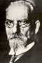

De: La Frikipedia, la enciclopedia extremadamente seria.
De: La Frikipedia, la enciclopedia extremadamente seria. De: La Frikipedia, la enciclopedia extremadamente seria.

|
Este artículo necesita ser ilustrado. Busca una afoto en nuestro depósito de imágenes o donde sea y ponla, pero que no sea pr0n, que se cabrea el señor del adSense y nos corta el grifo de los dólare. Y sin dólare no hay servidor... |
| Creíble. Este artículo o sección es demasiado creíble para poder permitírsele el paso. Por favor, el autor, o alguien que pase por aquí, meta alguna locura humorística, para terminar de reírme. |
 |
| De la serie raperos from around the world: | |||
| Matisyahu | |||
| |||
| Nacimiento | 32 De Febrero De 1979 (30) | ||
| Muerte | Muy Pronto | ||
| Ocupación | Músico Cantautor | ||
| Nacionalidad | Estados Unidos | ||
| Malo o Bueno | Las Dos Cosas | ||
| ¿Es decente? | Bastante | ||
| Atentados contra la humanidad | Ser Judío | ||
| Estilo | Hebraico | ||
| Notas | Es Judío | ||
Matisyahu (de nombre Matthew Jaashmeer Aaron Feivish Hershel Miller), nació en Algun Lado, 1979. Es un artista reggae y raggamuffin), aunque en su música mezcla influencias de los géneros sincopados como el dub y el ska. Muy afín con la cultura reggae, utiliza en sus letras temáticas espirituales derivadas de su condición de judío jasídico. Matisyahu es el equivalente hebreo al nombre Matías. Se le ha llegado a acusar de proselitismo.
Originalmente recibió el nombre Matthew Jaashmeer Aaron Feivish Hershel pero lo cambió porque le parecia una mierda. Tempranamente en su vida su nombre yídico quedó en un verdadero desuso en su ámbito familiar, ya que sus padres se acostumbraron a llamarlo "Matisyahu" que es considerado como la forma hibrida hebrea de la cual deriva el anglosajón Matthew y sería equivalente del español Matías. Su nombre yídico original había caído en un olvido tal que sólo lo recordó a la vuelta de unos años tras hallar su certificado de nacimiento en el ático de su casa luego de verse obligado a subir para buscar revistas porno en un momento de su vida en el cual estaba poseído por la paja.
Matthew Miller nació en Algun Lugar (Krusty El Payaso. A los 14 años, Matthew Miller se había acomodado a un fácil estilo de vida sucio, vegetariano hippie-adolescente. Era fan de Grateful Dead, se dejó crecer rastas, tocaba culos a las profes de su escuela los bongos y aprendió a imitar una caja de ritmos (Algo parecido a caja de zapatos, pero con ruidos eyacular cerca de una fuga de gas, decidió ir a un viaje de acampada a Colorado. En las Montañas Rocosas, lejos de la vida urbana, Matisyahu afirma que descubrió su Dios.
Su curiosidad sexual lo llevó a Judiolandia en un viaje que significó un punto de inflexión en su vida. Matisyahu aprovechó el tiempo rezando, estudiando y pensando en música en Jerusalén. Su dormida identidad judía afloró a su consciencia y a su regreso acudió a un instituto de Artes Sexuales Con Musica, introduciéndose un bandoñon en el orto en el reggae y el hip hop. Todas las semanas iba a un local de aficionados donde rapeaba, cantaba, le daba a la falopa y se mantenía homosexualmente activo. Fue entonces cuando empezó a desarrollar el sonido [reggae]-[hip hop] que suena tan parecido a tirarse un pedo abajo del agua.
Matisyahu volvió a sinagoga en el Upper West Side conocida por su ambiente hippie y la exuberancia de sus cantos, donde se convirtió al judaísmo jasídico. Mientras estudiaba en The New School, Matisyahu escribió una obra de teatro titulada Echadte Un Pedo (Expulsa Una Flatulencia), que trataba de un muchacho que conoce a un rabino jasídico y se convierte a la religión. Poco después del estreno de la obra, la vida de Matisyahu extrañamente imitó a su arte. Años después de que prendiera en él la primera chispa de religiosidad, Matisyahu conoció al rabino Lubavitch, iniciando la transformación de Matthew en Matisyahu. La persona que había sido tanto tiempo escéptica ante la autoridad y las reglas, se adaptó a la disciplina y estructura del judaísmo, siguiendo sus leyes estrictamente y envolviéndose en un desafío intelectual, sexual y en el diálogo espiritual que había buscado durante una década. Hoy, Matisyahu vive en pelotas, rascandose el culo con un tenedor, dividiendo su tiempo entre coleccionar pelusa de ombligo y hace estatuas de cera del oido.
Diego Meza fue un hombre pro-creador que en su vida fue alguien muy importante le enseño como ser homosexual y que no se note, lo guió como compositor para crear Marica tu, marica yo, marica IP anónima el cual fue un tema conocido en estos últimos tiempos por la comunidad homosexual.
Combinando los sonidos de Shlomo Carlebach, aunque manteniendo la identidad de una música propia, los conciertos de Matisyahu comunican una poderosa experiencia al público. Hasta el más escéptico percibe su habilidad para combinar un asunto tan delicado como es la relación entre fe y espiritualidad. Su reciente álbum Live at Stubb’s es un buen ejemplo de como se pueden unir las fuerzas de la música y de la fe a través del reggae y del baile. Tras este disco en directo, Matisyahu piensa editar pronto un nuevo álbum grabado en estudio.
Con un primer álbum publicado en 2004 (Shake Off the Dust... Arise) que llamó la atención de públicos de diferentes modos de vida, religiones y etnias.
Pero es con un disco en directo, Live at Stubb's, grabado el 19 de febrero de 2005, en el Stubb's de Austin (Texas), con el que se consolida.
En 2006 publica nuevo disco, Youth. Grabado en el verano de 2005 bajo la producción de Bill Laswell, prestigioso productor, bajista y entusiasta del reggae, que ha sabido dar al disco el balance necesario entre sonidos e ideas antiguos y modernos. Tres canciones del álbum (Time of Your Song, Indestructible y Jerusalem) han sido producidas por Ill Factor (que ha trabajado con Ginuwine) y Jimmy Douglass (Destiny's Child, Missy Elliott y Jay-Z)
En el 2007 fue nominado para competir por el Premio al Hombre Con La Barba Más Larga en la categoría de Judios Raperos por un álbum de re-gay que compuso. Sin embargo, el álbum ganador resultó ser Love Is My Religion de Ziggy Marley
Autor(es):